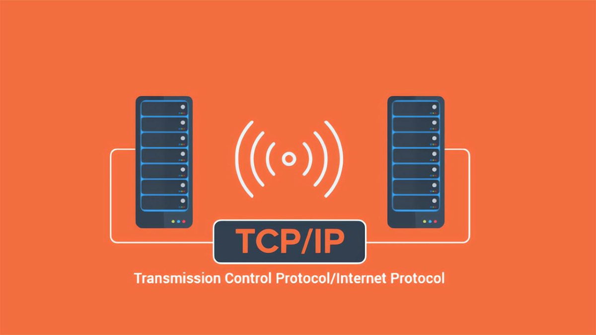
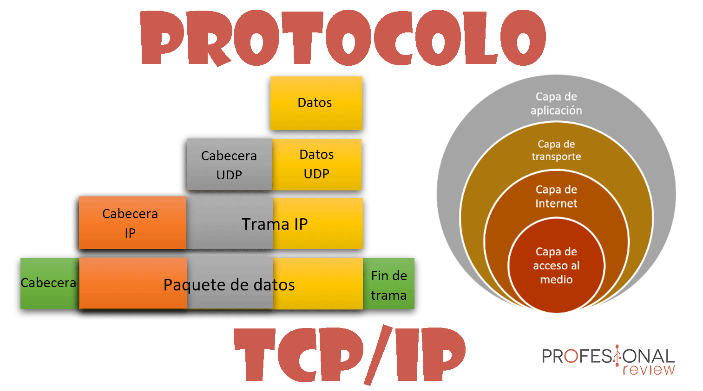

| Definicion |
TCP/IP son las siglas de Transmission Control Protocol/Internet Protocol (Protocolo de control de transmisión/Protocolo de Internet). TCP/IP es un conjunto de reglas estandarizadas que permiten a los equipos comunicarse en una red como Internet. TCP/IP es un conjunto de reglas de comunicación esenciales para Internet, centrado en la dirección IP, que asigna a cada dispositivo de la red una dirección única para facilitar la transmisión de paquetes de datos.Inicialmente creado con objetivos militares, este conjunto de protocolos se ajusta a varios criterios: fragmentación de mensajes en paquetes, empleo de direcciones, enrutamiento eficiente y detección de errores en las transmisiones. |
 | Diferencias |
TCP e IP son dos protocolos distintos para redes informáticas. IP es la parte que obtiene la dirección a la que se envían los datos. TCP se encarga de la entrega de los datos una vez hallada dicha dirección IP. Es posible separarlos, pero lo cierto es que no tiene mucho sentido diferenciar entre TCP e IP. Como se usan juntos tan habitualmente, “TCP/IP” y “modelo TCP/IP” son ya terminología reconocida. |

|
| Caracteristicas |
|
 |
VIDEO SOBRE MODELO TCP-IP |
|
© Copyright 2023. Fabian Alberto Perez Zarate